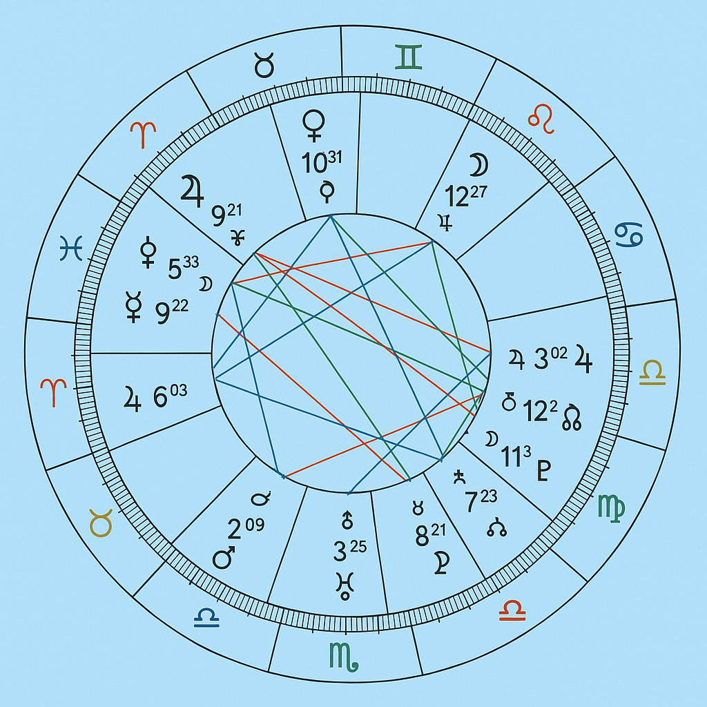

Astrology
Astrology is the ancient study of celestial bodies and how their positions and movements can influence human behavior, personality, and events. This system of knowledge, rooted in observation and symbolism, offers profound insight into character traits, life paths, and spiritual tendencies.

In this section, you'll learn how birth charts are constructed, what sun, moon, and rising signs mean, and how planetary alignments reveal patterns about your personality and destiny.